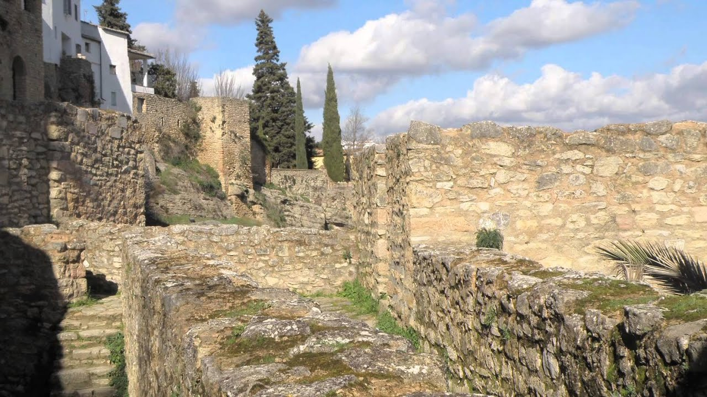

Viaje a Ronda
Organizador: Ayuntamiento de Málaga
Fecha: Fines de semana de Abril 2019

Ronda es un municipio español perteneciente a la comunidad autónoma de Andalucía, situada en el noroeste de la provincia de Málaga, a unos 100 kilómetros de la ciudad de Málaga. Es la cabeza del partido judicial homónimo y la capital de la comarca de la Serranía de Ronda.
La ciudad se asienta sobre una meseta cortada por un profundo tajo excavado por el río Guadalevín, al que asoman los edificios de su centro histórico, lo que confiere a la ciudad una panorámica pintoresca que, unida a la variedad de monumentos que posee, a su entorno natural y a su cercanía a los grandes centros del turismo de masas de la Costa del Sol, ha convertido a Ronda en un centro turístico notable. La cornisa del tajo y el puente que lo salva son la imagen por antonomasia de la ciudad
Lo más sorprendente de Ronda es el Puente Nuevo, que se erige sobre un imponente tajo de más de 100 metros. ¿Te gustaría saber cuándo se construyó? Pues nada menos que en 1793, con lo que te puedes hacer una idea de lo poco que ha cambiado Ronda en estos casi tres siglos. Ronda también es conocida como el lugar de nacimiento de las modernas corridas de toros. El coliseo taurino de la localidad sólo se usa una vez al año, durante su Feria Goyesca, pero alberga también un museo en el que puedes aprender acerca de la historia de esta (controvertida) tradición.
Puedes encontrar más información sobre qué hacer en Ronda pulsando aquí.
Comentarios
Autor: Alfonso Valdivieso
Fecha: 16/03/2019 18:32
Ronda es el mejor sitio del mundo!.
Autor: Martín Cano
Fecha: 16/03/2019 18:32
Ronda está sobrevalorada. No la recomiendo
@ 2019 - Miguel Ángel Hinojosa Castro & Adrián Izquierdo Pozo